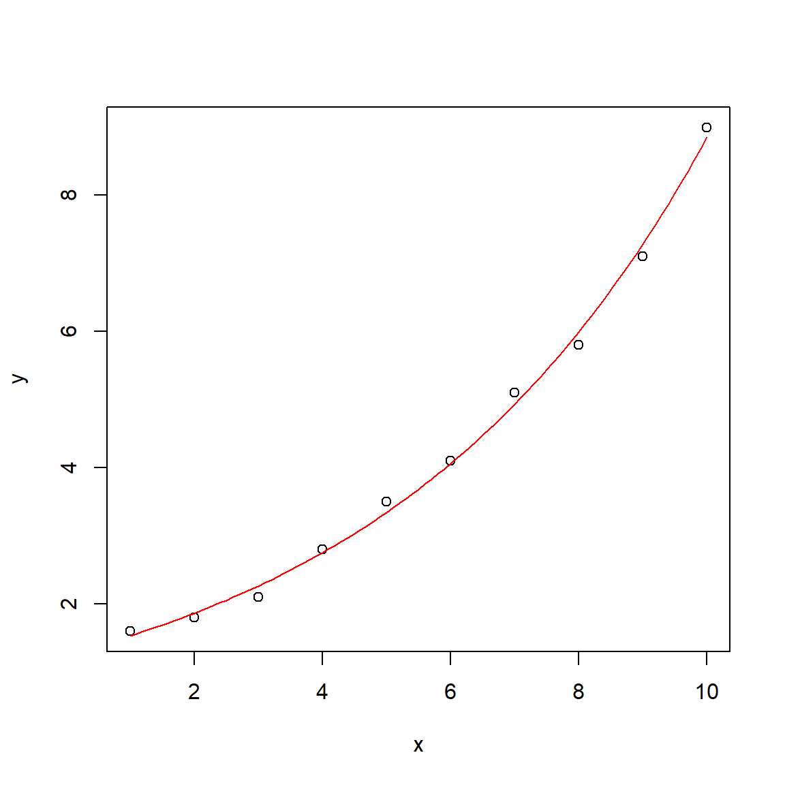

follows a “population” of several parameter sets in parallel
information exchange (“crossover”) between parameter sets
\(\rightarrow\) for complicated problems with large number of parameters
nowadays builtin in Microsoft Excel and LibreOffice Calc
… and many more.
Examples
Enzyme kinetics
Growth of organisms
Calibration of complex models
in chemistry, biology, engineering, finance business and social sciences
water: hydrology, hydrophysics, groundwater, wastewater, water quality …
Enzyme Kinetics
… can be described with the well-known Michaelis-Menten function:
\[
v = v_{max} \frac{S}{k_m + S}
\]
Linearization vs. (true) nonlinear regression
Linearizing transformation
[>] Appropriate if transformation improves homogeneity of variances [+] Fast, simple and easy. [+] Analytical solution returns the global optimum. [-] Only a limited set of functions can be fitted. [-] Can lead to wrongly transformed error structure and biased results.
Nonlinear Regression
[>] Appropriate if error structure is already homogeneous and/or analytical solution does not exist. [+] Can be used to fit arbitrary functions, given that the parameters are identifiable. [-] Needs start values and considerable computation time. [-] Best solution (global optimum) is not guaranteed.
Nonlinear regression in R: simple exponential
Fit model
# example datax <-1:10y <-c(1.6, 1.8, 2.1, 2.8, 3.5, 4.1, 5.1, 5.8, 7.1, 9.0)# initial parameters for the optimizerpstart <-c(a =1, b =1)# nonlinear least squaresfit <-nls(y ~ a *exp(b * x), start = pstart)summary(fit)
Formula: y ~ a * exp(b * x)
Parameters:
Estimate Std. Error t value Pr(>|t|)
a 1.263586 0.049902 25.32 6.34e-09 ***
b 0.194659 0.004716 41.27 1.31e-10 ***
---
Signif. codes: 0 '***' 0.001 '**' 0.01 '*' 0.05 '.' 0.1 ' ' 1
Residual standard error: 0.1525 on 8 degrees of freedom
Number of iterations to convergence: 13
Achieved convergence tolerance: 5.956e-08
Plot result
# additional x-values to get a smooth curvex1 <-seq(1, 10, 0.1)y1 <-predict(fit, data.frame(x = x1))plot(x, y)lines(x1, y1, col ="red")

Fitted parameters
Formula: y ~ a * exp(b * x)
Parameters:
Estimate Std. Error t value Pr(>|t|)
a 1.263586 0.049902 25.32 6.34e-09 ***
b 0.194659 0.004716 41.27 1.31e-10 ***
---
Signif. codes: 0 '***' 0.001 '**' 0.01 '*' 0.05 '.' 0.1 ' ' 1
Residual standard error: 0.1525 on 8 degrees of freedom
Number of iterations to convergence: 13
Achieved convergence tolerance: 5.956e-08
Estimate”: the fitted parameters
Std. error:\(s_{\bar{x}}\): indicates reliability of the estimate
t- and p-values: no over-interpretation!
in the non-linear world, “non-significant” parameters can be structurally necessary.
Coefficient of determination \(r^2 = 1-\frac{s^2_\varepsilon}{s^2_y}\)
Formula: V ~ f(S, Vm, K)
Parameters:
Estimate Std. Error t value Pr(>|t|)
Vm 0.11713 0.00381 30.74 1.36e-09 ***
K 5.38277 0.46780 11.51 2.95e-06 ***
---
Signif. codes: 0 '***' 0.001 '**' 0.01 '*' 0.05 '.' 0.1 ' ' 1
Residual standard error: 0.003053 on 8 degrees of freedom
Correlation of Parameter Estimates:
Vm
K 0.88
Number of iterations to convergence: 3
Achieved convergence tolerance: 6.678e-06
Plot
Note: Correlation of parameters
high absolute values of correlation indicate non-identifiability of parameters
critical value depends on the data
sometimes, better start values or another optimization algorithm can help
Practical hints
plot data
find good starting values by thinking about it or by trial and error
avoid very small and/or very large numbers \(\longrightarrow\) rescale the problem to values between approx 0.001 to 1000
start with a simple function and add terms and parameters sequentially
Don’t take significance of parameters too seriously. A non-significant parameter may be necessary for the structure of the model, removal of it will invalidate the whole model.
Further reading
Package growthrates for growth curves: https://cran.r-project.org/package=growthrates
Package FME for more complex model fitting tasks (identifiability analysis, constrained optimization, multiple dependent variables and MCMC): (Soetaert & Petzoldt, 2010), https://cran.r-project.org/package=FME
More about optimization in R: https://cran.r-project.org/web/views/Optimization.html
Price, W. L. (1977). A controlled random search procedure for global optimization. The Computer Journal, 20(4), 367–370.
Price, W. L. (1983). Global optimization by controlled random search. Journal of Optimization Theory and Applications, 40(3), 333–348.
Soetaert, K., & Petzoldt, T. (2010). Inverse modelling, sensitivity and monte carlo analysis in R using package FME. Journal of Statistical Software, 33(3), 1–28. https://doi.org/10.18637/jss.v033.i03
 Newton method (
Newton method (